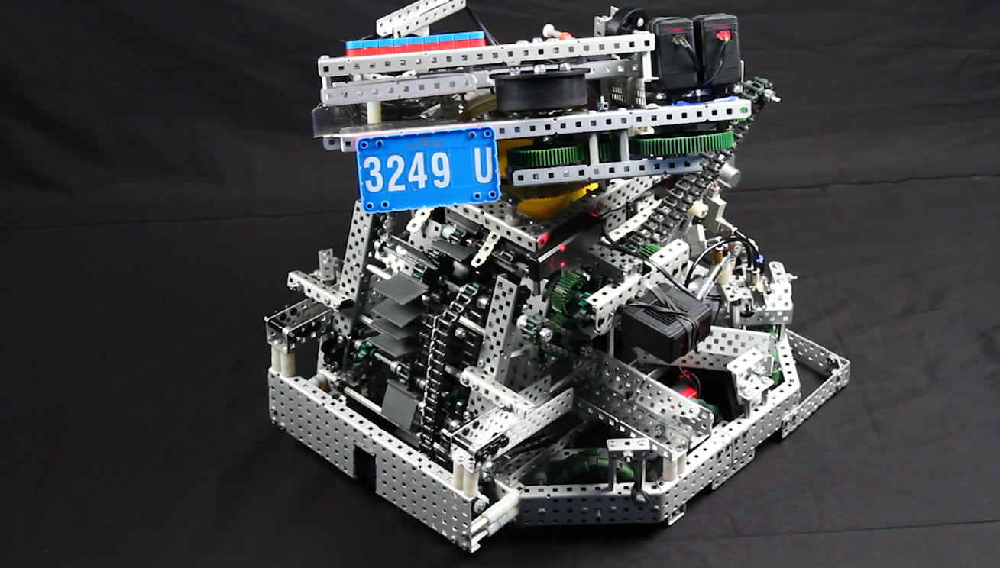

3249U Ultraviolet is comprised of 5 team members, (comprised left to right) Yuri Garcia (Rookie Notebooker), Clark Hegewald (Notebooker of 6 Years), Logan Baxter (Builder of 4 Years), Joseph Bochsler (Builder of 6 Years), and Jonah Campbell (Coder of 4 Years).

3249U's bot is named Prism, and it is a Flywheel Turret bot. It has a X-drive Chassis with 3.25 inch Omni Wheels. It has 3 odometry wheels with 2 on the sides and one at the back. It uses a flexwheel to double conveyer intake which leads to a verticle pneumatic Indexer. The Indexer pushes a disc into the 90 degree flywheel. The turret mechanism can change its angle due to it being mounted onto a polycarbonate gear. The intake and roller mechanism are PTO'd together to prevent motor overheating by powering both at once. It has two expansion systems. 7 Shooters for centerfield and a low linear slider. It is coded within PROS with an Autonmous Aiming System.
Prisms Chassis is a 200rpm, 3.25 in Omniwheel Holonominc Drive (X-Drive). It consists of 4 motors each angled at 45 degrees from the chassis. This allows the chassis to move in all directions. The main downside is the lack of power when strafing diagonally.